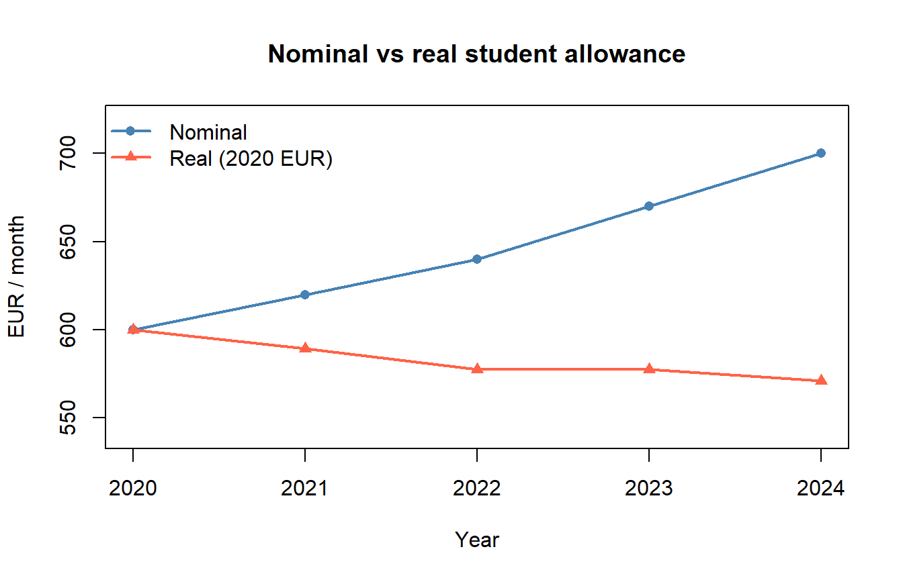
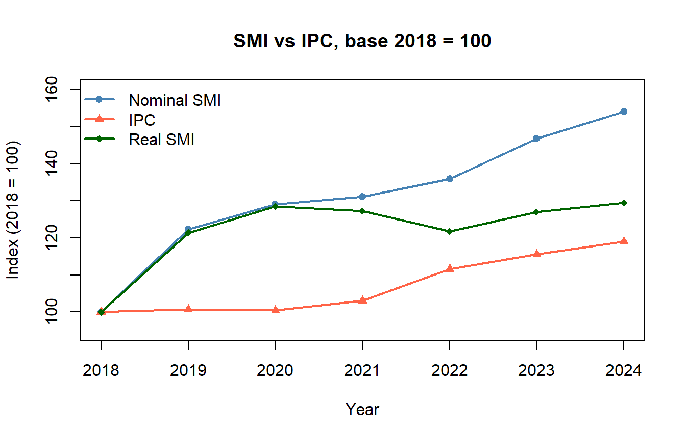

Code
set.seed(2026)
# No external libraries needed — base R is sufficient here.Status: ported 2026-05-19. Reviewed by editor: pending.
By the end of this chapter the reader should be able to:
Is the average salary in Spain rising faster than prices — that is, are workers actually better off, or does a bigger paycheck just buy the same basket?
The Spanish Salario Mínimo Interprofesional (SMI) rose from EUR 736 per month in 2018 to EUR 1,134 in 2024, an apparent nominal increase of 54%. Over the same period the Índice de Precios al Consumo (IPC, the Spanish CPI) climbed from a level of 95.1 to 113.2, meaning the typical household basket became roughly 19% more expensive. To compare these magnitudes — and to answer the broader question of how purchasing power evolves — we need a coherent way to summarise the change of a single variable (a price, a wage, an output level) and, more ambitiously, the change of a bundle of variables (a consumer basket, a country’s industrial output, a stock index). Index numbers are the descriptive statistic that makes this possible. The same machinery will reappear in Chapter 7, where index series become the raw material for trend, cycle, and seasonal decomposition.
An index number is a statistical measure that expresses the relative change of a variable (or a group of variables) with respect to a reference period, called the base period. Index numbers are conventionally scaled so that the base period equals 100.
Index numbers turn up everywhere a comparison across time or across countries is needed:
Before aggregating many goods, however, we need clean language for the change of a single variable. That is the next section.
Let \(Y_t\) denote the value of a variable in period \(t\).
The absolute variation between \(t-1\) and \(t\) is
\[ \Delta_{t/t-1} = Y_t - Y_{t-1}, \]
measured in the same units as \(Y\). The rate of variation (relative change, growth rate) is
\[ T_{t/t-1} = \frac{Y_t - Y_{t-1}}{Y_{t-1}} = \frac{Y_t}{Y_{t-1}} - 1, \]
and the unit variation factor (growth factor) is
\[ F_{t/t-1} = \frac{Y_t}{Y_{t-1}} = 1 + T_{t/t-1}. \]
A factor of \(1.05\) means a 5% increase; a factor of \(0.97\) means a 3% decrease.
If a quantity grows over several periods, the overall change is the product of the per-period factors, not the sum of the per-period rates.
It is tempting to summarise a multi-period growth experience by adding the period-by-period rates. Don’t. Rates compound multiplicatively. If a series grows by 10% one year and falls by 10% the next, it does not return to its starting value: \(1.10 \times 0.90 = 0.99\), a 1% net decline.
Formally:
\[ F_{T/0} = \frac{Y_T}{Y_0} = \prod_{t=1}^{T} F_{t/t-1}, \qquad 1 + T_{T/0} = \prod_{t=1}^{T} (1 + T_{t/t-1}). \]
The average rate of variation \(\bar{T}\) over \(T\) periods is the constant rate that, applied each period, reproduces the observed overall change:
\[ (1 + \bar{T})^T = \frac{Y_T}{Y_0} \quad\Longrightarrow\quad \bar{T} = \left(\frac{Y_T}{Y_0}\right)^{1/T} - 1. \]
Equivalently, \(1 + \bar{T}\) is the geometric mean of the \(T\) unit variation factors.
A household’s monthly consumption (EUR) is 1,800, 1,850, 1,830, 1,870, 1,910, 1,940, 1,980 from December 2015 through June 2016 (so \(Y_0 = 1{,}800\), \(Y_6 = 1{,}980\), \(T = 6\) months). The overall six-month growth factor is \(1{,}980 / 1{,}800 = 1.10\), a 10% rise. The average monthly rate is \((1.10)^{1/6} - 1 = 1.601\%\). The arithmetic mean of the six monthly rates is 1.61% — close, but biased upward.
We now formalise the tracking of a single variable.
The elementary (or simple) index number of \(Y\) in period \(t\) with base period \(0\) is
\[ I_{t/0} = \frac{Y_t}{Y_0} \times 100. \]
It equals 100 in the base period and reports the level as a percentage of the base. An index of 125 means the variable is 25% higher than in the base period; an index of 90 means 10% lower. The rate of variation between any two periods can be recovered as
\[ T_{t/0} = \frac{I_{t/0} - 100}{100}. \]
Let \(I_{t/0}\) denote the elementary index of \(Y\) in period \(t\) with base \(0\). Then:
All three follow directly from the definition \(I_{a/b} = (Y_a / Y_b) \times 100\). The circular property is the engine of base-changing and linking, which we will use heavily in Section 6.7.
Suppose a product’s price index reads \(I_{2015/2010} = 120\) and \(I_{2020/2015} = 115\). Then by the circular property \[ I_{2020/2010} = \frac{115 \cdot 120}{100} = 138. \] The price in 2020 was 38% higher than in 2010, and the implied inverse is \(I_{2010/2020} = 10{,}000 / 138 = 72.46\).
In practice we rarely care about a single price. The CPI aggregates hundreds of items; a stock index aggregates dozens of firms. We need composite (synthetic) indices.
The two natural design choices for an aggregator are whether to weight and, if so, which period’s weights to use. Unweighted aggregators (the Sauerbeck mean of elementary indices and the Bradstreet–Dutot ratio of arithmetic means) treat all goods equally, which is unrealistic — a household spends a much larger share on housing than on matches. The serious composite indices are the weighted ones.
Let \(p_{i,t}\) and \(q_{i,t}\) denote price and quantity of good \(i\) in period \(t\). The Laspeyres price index weights elementary price relatives by base-period quantities:
\[ L_P^{t/0} = \frac{\sum_{i=1}^{n} p_{i,t}\, q_{i,0}}{\sum_{i=1}^{n} p_{i,0}\, q_{i,0}} \times 100. \]
Equivalently, it is the weighted arithmetic mean of elementary price indices with base-period expenditure shares as weights:
\[ L_P^{t/0} = \sum_{i=1}^{n} w_{i,0}\, I_{i}^{t/0}, \qquad w_{i,0} = \frac{p_{i,0}\, q_{i,0}}{\sum_j p_{j,0}\, q_{j,0}}. \]
The Spanish IPC (and most national CPIs) is a Laspeyres-type index whose basket is refreshed every five years or so from household budget surveys.
The Paasche price index uses current-period quantities as weights:
\[ P_P^{t/0} = \frac{\sum_{i=1}^{n} p_{i,t}\, q_{i,t}}{\sum_{i=1}^{n} p_{i,0}\, q_{i,t}} \times 100. \]
The Fisher price index is the geometric mean of Laspeyres and Paasche:
\[ F_P^{t/0} = \sqrt{L_P^{t/0} \cdot P_P^{t/0}}. \]
When relative prices change, consumers substitute away from goods whose price has risen most. This has three consequences worth memorising.
A 5% rise in the Laspeyres-type IPC does not mean the true cost of maintaining the same standard of living rose by 5%. Because the basket is held fixed, substitution toward cheaper goods is unobserved and the welfare-equivalent change is typically less than 5%.
A simple economy has three goods in 2020 (base) and 2024:
| Good | \(p_0\) | \(q_0\) | \(p_t\) | \(q_t\) |
|---|---|---|---|---|
| Bread (kg) | 1.20 | 200 | 1.80 | 170 |
| Milk (L) | 0.90 | 300 | 1.10 | 310 |
| Rice (kg) | 1.50 | 100 | 2.10 | 80 |
The four expenditure sums are \(\sum p_0 q_0 = 660\), \(\sum p_t q_0 = 900\), \(\sum p_0 q_t = 603\), \(\sum p_t q_t = 815\), so
\[ L_P = \frac{900}{660} \times 100 = 136.36, \quad P_P = \frac{815}{603} \times 100 = 135.16, \quad F_P = \sqrt{136.36 \cdot 135.16} = 135.75. \]
As expected \(P_P < F_P < L_P\), reflecting that consumers substituted away from bread and rice (whose prices rose 50% and 40%) toward the relatively cheaper milk.
Price and quantity play symmetric roles in index construction. Swap them and we obtain quantity indices.
\[ L_Q^{t/0} = \frac{\sum p_{i,0}\, q_{i,t}}{\sum p_{i,0}\, q_{i,0}} \times 100, \qquad P_Q^{t/0} = \frac{\sum p_{i,t}\, q_{i,t}}{\sum p_{i,t}\, q_{i,0}} \times 100, \qquad F_Q^{t/0} = \sqrt{L_Q \cdot P_Q}. \]
A Laspeyres quantity index of 112 means that, valued at base-period prices, the quantity bundle is 12% larger than in the base period.
The value index measures the change in total expenditure:
\[ V^{t/0} = \frac{\sum p_{i,t}\, q_{i,t}}{\sum p_{i,0}\, q_{i,0}} \times 100. \]
Because \(\sum p_t q_t\) contains both price and quantity movements, the value index decomposes cleanly:
For any basket,
\[ V^{t/0} = \frac{L_P^{t/0} \cdot P_Q^{t/0}}{100} = \frac{P_P^{t/0} \cdot L_Q^{t/0}}{100}. \]
The two cross-pairings (\(L_P\) with \(P_Q\), or \(P_P\) with \(L_Q\)) are exact algebraic identities; the all-Laspeyres or all-Paasche pairings hold only approximately. A useful approximate decomposition uses Fisher on both sides: \(V \approx F_P \cdot F_Q / 100\).
Continuing from §6.4.4, \(V = 815/660 \times 100 = 123.48\) and \(P_Q = 815/900 \times 100 = 90.56\). Check: \(L_P \cdot P_Q / 100 = 1.3636 \cdot 0.9056 \cdot 100 = 123.50\) (the residual 0.02 is pure rounding). Prices rose by 36% while real quantities fell by 9%, giving a net 23% rise in total expenditure.
The IPC is not computed directly over all consumer goods. The INE first builds twelve sub-group indices (food, housing, transport, …), each a Laspeyres-type composite, and then aggregates them with expenditure-share weights:
\[ \text{CPI}_{t/0} = \sum_{g=1}^{G} w_g \cdot I_{g,t/0}, \qquad \sum_g w_g = 1. \]
The contribution of sub-group \(g\) to the overall CPI change is
\[ C_g = w_g \times (I_{g,t/0} - 100), \qquad \sum_g C_g = \text{CPI}_{t/0} - 100. \]
This identity is the standard tool for explaining headline inflation: a 7%-of-basket transport sub-index up by 35% contributes \(0.07 \times 35 = 2.45\) percentage points, regardless of what is happening elsewhere.
In a five-group toy CPI with weights (food 0.25, housing 0.30, transport 0.15, clothing 0.10, other 0.20) and 2024 sub-indices (128, 118, 135, 105, 110), the overall index is \(0.25 \cdot 128 + \dots + 0.20 \cdot 110 = 120.15\). The largest contribution is food (7.0 pp) — even though transport had the largest price increase (35%), its small weight means it contributes only 5.25 pp.
Statistical agencies periodically refresh the basket and reset the base. Spain’s IPC has used bases 1983, 1992, 2001, 2006, 2011, 2016, and 2021. To build a long series we must link segments.
To convert an index from base \(b_1\) to a new base \(b_2\):
\[ I_{t/b_2} = \frac{I_{t/b_1}}{I_{b_2/b_1}} \times 100. \]
This is just the circular property of §6.3.1 applied to a base change.
Spanish CPI base 1992 reports \(I_{2001/1992} = 132.5\); base 2001 reports \(I_{2005/2001} = 115.4\). The 2005 index on base 1992 is then
\[ I_{2005/1992} = \frac{115.4 \cdot 132.5}{100} = 152.91. \]
Prices in 2005 were 52.9% higher than in 1992.
The same machinery works in either direction. To bring an old-base series onto a new base, divide by the bridging value; to push a new-base series backward, multiply by it.
When comparing monetary values across time, we must strip out the effect of price changes.
To deflate a nominal value \(Y_t^{\text{nom}}\) using price index \(I_{t/0}\) is to compute the real (constant-price) value
\[ Y_t^{\text{real}} = \frac{Y_t^{\text{nom}}}{I_{t/0} / 100} = \frac{Y_t^{\text{nom}}}{I_{t/0}} \times 100. \]
The real value is expressed in base-year euros — euros with the purchasing power of the base year.
A closely related quantity is the required salary that would have preserved purchasing power. If a worker earned \(S_0\) in the base period, the salary needed in period \(t\) to buy the same basket is
\[ S_t^{\text{required}} = S_0 \cdot \frac{I_{t/0}}{100}. \]
If actual \(S_t < S_t^{\text{required}}\), purchasing power has been lost.
For a country with nominal GDP (EUR bn) of 500, 520, 480, 530, 575, 610 and a GDP deflator (base 2018 = 100) of 100.0, 102.5, 103.8, 108.0, 116.5, 121.0 over 2018–2023, real GDP in 2018 euros is 500.0, 507.3, 462.4, 490.7, 493.6, 504.1. Nominal output grew 22%; real output grew only 0.8%. The 2020 recession (visible as the drop to 462.4) is invisible if one looks only at nominal figures.
Index numbers are descriptive summaries. Two indices that move together — say, the Spanish SMI and the IPC — do not prove that one caused the other. Confounders (energy shocks, post-COVID demand, ECB monetary policy) can move both series jointly. Causal claims require either an explicit experiment or a credible identifying restriction, neither of which is supplied by the index machinery developed in this chapter. We will return to this point repeatedly in Chapter 7 and in TC2 / Econometrics I.
The lab builds a five-good student basket (coffee, bus pass, rent, textbooks, beer), computes Laspeyres / Paasche / Fisher price and quantity indices, deflates a monthly allowance, links two CPI segments, and finally compares the Spanish minimum wage (SMI) against the IPC.
set.seed(2026)
# No external libraries needed — base R is sufficient here.years <- 2019:2024
coffee <- c(1.10, 1.15, 1.20, 1.30, 1.40, 1.55)
names(coffee) <- years
I_coffee <- coffee / coffee["2019"] * 100
round(I_coffee, 2) 2019 2020 2021 2022 2023 2024
100.00 104.55 109.09 118.18 127.27 140.91 Coffee prices have risen about 41% between 2019 and 2024.
rov <- diff(coffee) / coffee[-length(coffee)] * 100
names(rov) <- paste0(years[-1], "/", years[-length(years)])
round(rov, 2)2020/2019 2021/2020 2022/2021 2023/2022 2024/2023
4.55 4.35 8.33 7.69 10.71 # Geometric-mean average annual rate
n_periods <- length(coffee) - 1
total_ratio <- coffee[length(coffee)] / coffee[1]
avg_rate <- (total_ratio^(1 / n_periods) - 1) * 100
round(avg_rate, 2)2024
7.1 The geometric-mean average rate is the correct summary; the arithmetic mean of the annual rates would over-state the true growth.
goods <- c("Coffee", "Bus pass", "Rent", "Textbooks", "Beer")
p0 <- c(1.15, 40, 350, 45, 1.80) # prices in 2020
p1 <- c(1.55, 52, 420, 50, 2.30) # prices in 2024
q0 <- c(300, 10, 12, 6, 200) # quantities in 2020
q1 <- c(280, 10, 12, 5, 180) # quantities in 2024
L_P <- sum(p1 * q0) / sum(p0 * q0) * 100
P_P <- sum(p1 * q1) / sum(p0 * q1) * 100
F_P <- sqrt(L_P * P_P)
round(c(Laspeyres = L_P, Paasche = P_P, Fisher = F_P), 2)Laspeyres Paasche Fisher
121.7 121.7 121.7 Prices for the student basket rose roughly 19–20% between 2020 and 2024. Fisher lies between Laspeyres and Paasche, as the substitution-bias story predicts.
L_Q <- sum(q1 * p0) / sum(q0 * p0) * 100
P_Q <- sum(q1 * p1) / sum(q0 * p1) * 100
F_Q <- sqrt(L_Q * P_Q)
round(c(L_Q = L_Q, P_Q = P_Q, F_Q = F_Q), 2) L_Q P_Q F_Q
98.13 98.13 98.13 # Two ways to compute the value index
V_direct <- sum(p1 * q1) / sum(p0 * q0) * 100
V_decomp <- L_P * P_Q / 100
round(c(direct = V_direct, decomposition = V_decomp), 2) direct decomposition
119.43 119.43 The decomposition \(V = L_P \cdot P_Q / 100\) holds exactly (up to floating-point error).
years_d <- 2020:2024
nominal <- c(600, 620, 640, 670, 700)
price_idx <- c(100, 105.2, 110.8, 116.0, 122.6)
real <- nominal / price_idx * 100
data.frame(year = years_d, nominal, price_idx, real = round(real, 2)) year nominal price_idx real
1 2020 600 100.0 600.00
2 2021 620 105.2 589.35
3 2022 640 110.8 577.62
4 2023 670 116.0 577.59
5 2024 700 122.6 570.96plot(years_d, nominal, type = "o", pch = 16, col = "steelblue",
ylim = c(540, 720), lwd = 2,
xlab = "Year", ylab = "EUR / month",
main = "Nominal vs real student allowance")
lines(years_d, real, type = "o", pch = 17, col = "tomato", lwd = 2)
legend("topleft", legend = c("Nominal", "Real (2020 EUR)"),
col = c("steelblue", "tomato"), pch = c(16, 17),
lwd = 2, bty = "n")
The nominal allowance climbs from 600 to 700 EUR per month, but the real allowance (in 2020 EUR) falls to about 571 — purchasing power has declined because prices grew faster than the allowance.
# Old series, base 2015 = 100, 2015–2019
old_base <- c(100, 101.5, 103.2, 105.0, 107.1)
names(old_base) <- 2015:2019
# New series, base 2019 = 100, 2019–2024
new_base <- c(100, 102.3, 105.1, 109.4, 112.6, 116.0)
names(new_base) <- 2019:2024
# Link the old series to the new base (2019 = 100)
link_factor <- 100 / old_base["2019"]
old_linked <- old_base * as.numeric(link_factor)
# Combine, dropping the duplicate 2019 from the old segment
linked_series <- c(old_linked[1:4], new_base)
round(linked_series, 2) 2015 2016 2017 2018 2019 2020 2021 2022 2023 2024
93.37 94.77 96.36 98.04 100.00 102.30 105.10 109.40 112.60 116.00 The two segments now sit on a common base (2019 = 100) and can be analysed as one continuous series.
year_rd <- 2018:2024
smi <- c(735.9, 900.0, 950.0, 965.0, 1000.0, 1080.0, 1134.0)
cpi_rd <- c(95.1, 95.8, 95.5, 98.0, 106.1, 109.9, 113.2)
smi_idx <- smi / smi[1] * 100 # SMI rebased to 2018 = 100
cpi_idx <- cpi_rd / cpi_rd[1] * 100 # IPC rebased to 2018 = 100
real_smi <- smi_idx / cpi_idx * 100
round(data.frame(year = year_rd, smi_idx, cpi_idx, real_smi), 2) year smi_idx cpi_idx real_smi
1 2018 100.00 100.00 100.00
2 2019 122.30 100.74 121.41
3 2020 129.09 100.42 128.55
4 2021 131.13 103.05 127.25
5 2022 135.89 111.57 121.80
6 2023 146.76 115.56 127.00
7 2024 154.10 119.03 129.46plot(year_rd, smi_idx, type = "o", pch = 16, col = "steelblue",
ylim = c(95, 160), lwd = 2,
xlab = "Year", ylab = "Index (2018 = 100)",
main = "SMI vs IPC, base 2018 = 100")
lines(year_rd, cpi_idx, type = "o", pch = 17, col = "tomato", lwd = 2)
lines(year_rd, real_smi, type = "o", pch = 18, col = "darkgreen", lwd = 2)
legend("topleft",
legend = c("Nominal SMI", "IPC", "Real SMI"),
col = c("steelblue", "tomato", "darkgreen"),
pch = c(16, 17, 18), lwd = 2, bty = "n")
The real SMI rose substantially over 2018–2024 — nominal SMI growth outpaced inflation. Two warnings, both echoing §6.9: (i) the SMI is an instrument set by policy, not an outcome that should be deflated like a market wage; (ii) the co-movement of SMI and IPC does not identify a causal effect of SMI on inflation. Both series respond to broader macroeconomic forces.
An index for the price of coffee in 2024 (base 2019 = 100) equals 141. Which statement is correct?
Answer: B. The index 141 means the 2024 price is 141% of the 2019 price — equivalently, 41% higher. Option A confuses “of” with “more than”; D confuses index points with EUR. Option C is true arithmetically (the price of a 1 EUR coffee is now 1.41 EUR) but the percentage statement is the conventional interpretation.
If a series goes from 100 (year 0) to 150 (year 5), the average annual rate of variation is:
Answer: B. Growth rates compound, so the constant rate that produces the observed five-fold-period increase is the geometric mean of the factors, \(1.5^{1/5} \approx 1.0845\). Options A and C treat compounding as additive and over-state the rate.
The Laspeyres price index weights elementary price relatives by:
Answer: A. Laspeyres is the cost of the base-period basket at current prices, divided by the cost of the same basket at base-period prices. Paasche uses the current basket; Fisher takes a geometric mean of the two values, not of the quantities themselves.
When relative prices change, consumers substitute away from goods whose price has risen most. As a result:
Answer: A. Laspeyres holds the old basket fixed, ignoring substitution toward cheaper goods, and so over-states the cost increase. Paasche uses the new basket, which already reflects substitution, and so under-states it. Fisher splits the difference.
A worker’s nominal wage rises 20% while the CPI rises 30% over the same period. The real wage has:
Answer: B. Real growth equals the ratio of nominal growth to price growth, not their difference. The wage buys \(1.20 / 1.30 \approx 92.3\%\) of the basket it used to buy.
If nominal GDP grows 4% and the GDP deflator grows 5%, real GDP:
Answer: B. Real GDP equals nominal GDP divided by the deflator (×100); \(1.04 / 1.05 \approx 0.990\), a 1% contraction in real terms. C confuses real growth with the sum of the two changes.
An old CPI (base 2010 = 100) reads 107.1 in 2019. A new CPI (base 2019 = 100) reads 116.0 in 2024. To link both into one continuous series with 2019 = 100:
Answer: A. Dividing the old series by 107.1 (and multiplying by 100) re-anchors it so that the bridging year 2019 reads 100 — exactly the value the new series already shows. Option B re-anchors the wrong segment.
Spain’s nominal Minimum Wage (SMI) and the IPC both rose between 2018 and 2024. A journalist writes: “Minimum-wage hikes caused inflation.” What is the most appropriate critique from this course?
Answer: B. Index numbers are descriptive; co-movement is consistent with many causal stories, including third-factor confounding. Identifying the causal effect of a policy on inflation requires either an experiment or a credible identifying restriction — beyond the scope of TC1.
The quarterly revenue (thousand EUR) of a small business is Q1 = 120, Q2 = 138, Q3 = 150, Q4 = 162.
Annual production (tonnes) is 800, 856, 924, 980 over 2020–2023.
The price (EUR/kg) of a commodity is 4.00 (2021), 4.60 (2022), 5.29 (2023).
A family consumes apples, chicken, olive oil, and pasta. In 2019: prices (EUR) 2.00, 5.50, 4.00, 1.20 and quantities 50, 30, 20, 40. In 2024: prices 2.80, 7.20, 8.50, 1.50 and quantities 40, 28, 12, 55.
Spain changed CPI base from 2016 to 2021. Available data: base 2016 reads 103.2 (2018), 104.0 (2019), 103.5 (2020), 106.8 (2021); base 2021 reads 100.0 (2021), 108.4 (2022), 112.1 (2023).
Annual nominal salary (EUR) is 24,000, 24,600, 25,400, 26,800, 28,000 over 2019–2023. CPI (base 2019 = 100) is 100.0, 100.8, 103.5, 112.0, 116.2.
A Granada professor earned EUR 36,000 in 2019. Spanish CPI (base 2016 = 100) is 104.5 (2019) and 121.3 (2024).
A four-sub-group CPI has weights and indices in 2022 (= 100 across the board), 2023, and 2024:
| Sub-group | Weight | CPI 2023 | CPI 2024 |
|---|---|---|---|
| Food | 0.30 | 110.5 | 114.2 |
| Housing | 0.35 | 104.0 | 108.6 |
| Transport | 0.20 | 115.8 | 118.3 |
| Other | 0.15 | 102.5 | 105.0 |